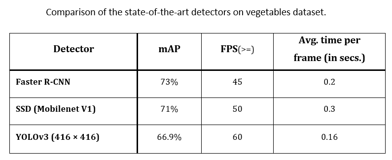
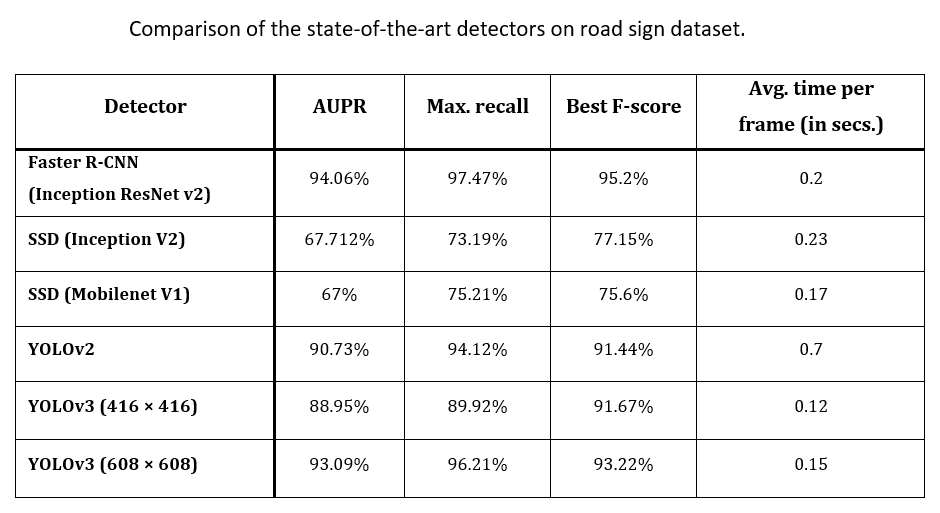

Anushka Dhiman

A Data Scientist based in Delhi, India.
Explore and analyse the data, build models using machine learning and deep learning algorithms to solve challenging business problems.
Portfolio
Vegetables Detection for Kitchen Arm Robot
Vegetables Detection using state-of-the-art-detectors (Yolov3, FRCNN, SSD): The project involves a custom real-time object detector to detect vegetables in the scene. I have trained the custom dataset using different state-of-the-art-detectors which are Yolov3, FRCNN, SSD and then test and compare the accuracy rate and time-efficiency of these algorithms.

Real Time-Facial Recognition System and Face Expression, Age, Gender Recognizer in the Web Browser

Road Sign Tracking using Simple Online and Realtime Tracking with a Deep Association Metric (Deep SORT)

Road Sign Detection using Yolov2, Yolo-v3, CNN


Blog
I take some time off to work on things I'm passionate about. I write articles and publish them on the Internet. Below is a list of blogs that I wrote on machine learning.